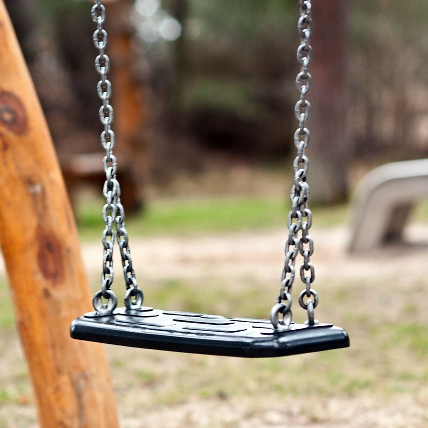

Všechny maminky (včetně nás) neustále řeší, kam s dětmi vyrazit, jaké kroužky pro ně zvolit nebo kde sehnat vhodného dětského lékaře. Proto připravujeme projekt Mami, kam jdem? který mapuje dětská hřiště a areály, baby-friendly kavárny a restaurace, volnočasové aktivity, soukromé školky i dětské lékaře v Praze 15 a blízkém okolí.

Všechna místa budou zobrazena na mapě pro lepší přehlednost a uživatel si je bude moct vyfiltrovat podle typu, přesnější lokality i jednotlivých parametrů (například hřiště podle herních prvků nebo lékaře podle specializace).
Tímto projektem chceme ulehčit život všem maminkám z naší městské části, aby měly všechny potřebné informace aktuální a ucelené. Na internetu jsme totiž nenašly žádnou podobnou stránku, která by tyto okruhy detailně mapovala.
